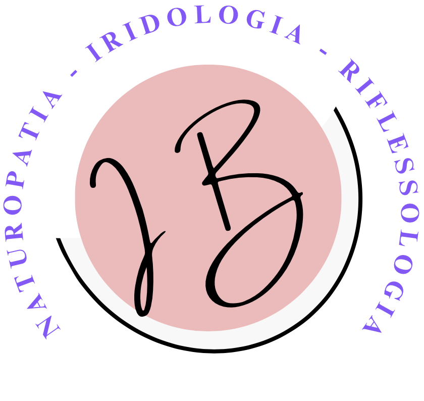

Sono Isabella Bedendo, naturopata Iridologa certificata con oltre 10 anni di esperienza. Credo nel potere della natura per ristabilire l’equilibrio del corpo e della mente. Il mio approccio unisce scienza, tradizione e ascolto profondo per creare percorsi di benessere su misura. Aggiungo altro testo per verificare lo spazio: sono appassionata di erboristeria, riflessologia e tecniche olistiche, ho studiato per anni per perfezionare il mio metodo, lavoro con ogni cliente per individuare soluzioni personalizzate che rispettino il loro equilibrio naturale, e offro consulenze dettagliate basate su analisi approfondite come l’iridologia e la valutazione del benessere olistico. Come naturopata a Como, sono specializzata in iridologia e riflessologia. Offro consulenze personalizzate per il benessere olistico, utilizzando rimedi naturali per aiutare i miei clienti a ritrovare equilibrio e serenità. Come naturopata a Como, offro consulenze di naturopatia per promuovere il benessere olistico nella zona di Como e dintorni.